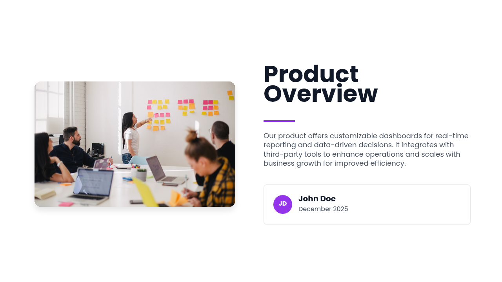
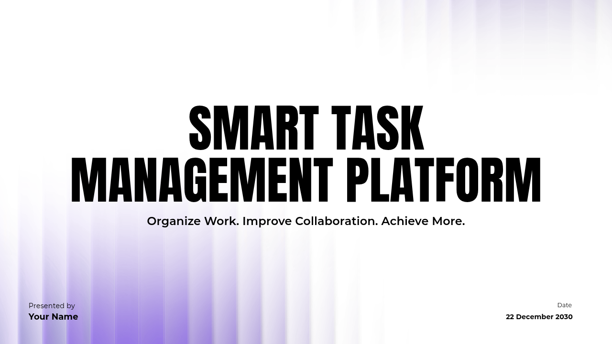
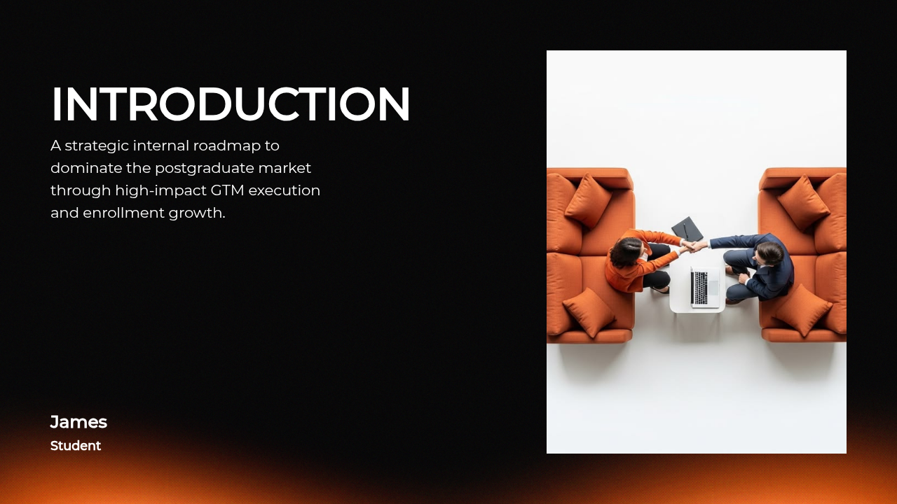

AI创作 / PPT生成
先选一套可直接生成的 PPT 模板
模板来自内置 Presenton 资产，每套包含多个页面 layout，生成时会把资料内容写入这些版式。
全部模板课堂复习汇报展示



查看模板详情
这版把“现成模板可用”放到入口：用户先选真实模板包，查看封面/目录/章节/内容/图文/总结等版式，再上传资料生成。模板不是风格标签，而是可被后端 Presenton runtime 直接渲染的资产。
模板来自内置 Presenton 资产，每套包含多个页面 layout，生成时会把资料内容写入这些版式。



覆盖封面、目录、章节、重点页、图文页和总结页。用户可以先看结构，再决定是否使用。
课程名、主题、日期
章节结构与学习路径
标题、要点、说明
适合核心结论页
图示、流程、对比
回顾与行动建议
上传 TXT、PDF、Word、PPT 或 Excel。AI 会先整理大纲，再把内容填入模板页面。
避免直接生成不可控 PPT。这里可以调整顺序、删除重复页、补充老师要求的重点。
已选择 12 个 layout 中的 6 类页面。生成时按大纲内容匹配，用户也可以锁定关键页版式。
第 1 页
自动生成
第 3-12 页
可手动锁定
页面会分批生成。完成后可以逐页检查标题、要点、图片和版式匹配。
先渲染 HTML 页面，再导出 PDF、预览图和 PPTX。若 PPTX 转换器不可用，会保留 PDF 并说明原因。
共 15 页，使用 General 模板，已生成预览图、PDF 和 PPTX。